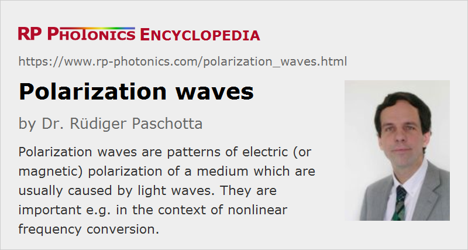

Polarization Waves
Definition: patterns of electric (or magnetic) polarization of a medium which are usually caused by light waves
German: Polarisationswellen
Category: physical foundations
How to cite the article; suggest additional literature
Author: Dr. Rüdiger Paschotta
When an optical wave, e.g. a laser beam, propagates in a medium, the associated electromagnetic field generates patterns of electric and magnetic polarization of the medium which propagate together with the generating optical wave. In most cases of propagation in transparent media (e.g. laser crystals or glasses), the electric polarization wave has a much stronger effect than the corresponding magnetic wave, because the electric susceptibility is much higher than the magnetic one. The interaction of the electric polarization wave with the electromagnetic wave usually reduces the phase velocity of the combined phenomenon below the vacuum velocity of light; the refractive index is the factor by which the phase velocity is reduced. Even though the wave propagation can still be described with Maxwell's equations, amended with some electric susceptibility, what propagates in the medium is actually more than only an electromagnetic wave.
For small electric fields, such as usually occur when lasers are not involved, the electric polarization is precisely proportional to the electric field strength. At high field strength, such as occur particularly in intense laser pulses, a significant nonlinearity of the polarization can occur, which can be described as additional polarization components proportional to higher integer powers of the electric field strength. Although the even orders of nonlinearity do not occur in most media due to certain symmetries, there are nonlinear crystal materials where the electric polarization also has a component proportional to the square of the electric field. In that case, a single laser beam also generates a nonlinear polarization wave with twice the optical input frequency, which propagates with the phase velocity of the input beam. That nonlinear polarization wave then radiates another optical field at that frequency. This is the phenomenon of frequency doubling, which usually becomes strong only when the radiated second-harmonic wave has the same phase velocity as the nonlinear polarization wave (→ phase matching). For two overlapping input beams (even with different propagation directions), there are also polarization waves with the sum and difference of the input frequencies (→ sum and difference frequency generation). Nonlinear polarization waves also play an important role in optical parametric oscillation and amplification.
Questions and Comments from Users
Here you can submit questions and comments. As far as they get accepted by the author, they will appear above this paragraph together with the author’s answer. The author will decide on acceptance based on certain criteria. Essentially, the issue must be of sufficiently broad interest.
Please do not enter personal data here; we would otherwise delete it soon. (See also our privacy declaration.) If you wish to receive personal feedback or consultancy from the author, please contact him e.g. via e-mail.
By submitting the information, you give your consent to the potential publication of your inputs on our website according to our rules. (If you later retract your consent, we will delete those inputs.) As your inputs are first reviewed by the author, they may be published with some delay.
See also: phase velocity, group velocity, refractive index, nonlinear polarization, nonlinear frequency conversion, The Photonics Spotlight 2007-08-15
and other articles in the category physical foundations
|  |
If you like this page, please share the link with your friends and colleagues, e.g. via social media:
These sharing buttons are implemented in a privacy-friendly way!